¿La zona que los datos respaldan, y lo que no alcanzan, se leen como esperas en el playground y en la Brecha? Mira cada fila de la tabla con su recorte.
La zona respaldada por los datos · mirada de forma «no vista» (S8)
Vitrina construida con el commit en curso, servida desde out/. Clase de mirada: FORMA, registrada «no vista»; su veredicto viaja al gate del hito H-2 (el ensayo general). Solo en español: el inglés llega al cierre del hito. Las capturas enteras no se versionan: cada una se identifica por su huella SHA-256.
La matriz
| # | Archivo / pantalla | Botón o estado | Qué mirar | Respuesta esperada | Tu respuesta |
|---|---|---|---|---|---|
| 1 | Playground (/es/playground), la zona respaldada con el error del informe | tal como abre | El panel «Dónde el umbral tiene el respaldo de los datos», el selector del error que aceptas, la curva con su banda de trama y la tabla con las filas de la zona marcadas. | 10 % marcado; «Zona respaldada con 10 % de error: confianza mínima de 0,50 a 0,90»; la banda con trama y borde discontinuo sobre la curva; nueve filas con trama, palomita y la palabra «respaldado por los datos» para el lector de pantalla; la leyenda «Zona respaldada». Tres notas: la cobertura conjunta que no se respalda con la secuencia fija, el orden de la prueba y el redactor sin verdad. | sin respuesta |
| 2 | Playground, error de 5 % y U1 por debajo de la zona (pasada de interacción) | tras elegir 5 % | Que la zona se estreche a 0,75–0,85, que el cuadro ■ de la curva quede fuera de la banda y que la tabla marque solo tres filas. | «Zona respaldada con 5 % de error: confianza mínima de 0,75 a 0,85»; tres filas con trama; el cuadro del U1 actual (0,60) a la derecha de la banda (un umbral más bajo da más cobertura); en la nota de la cobertura conjunta, «más de 2.680 casos». | sin respuesta |
| 3 | Playground, el deslizador de U1 con la zona y dónde cae su valor | tras mover U1 a 0,60 con 5 % | Que el tramo respaldado se dibuje sobre la pista con trama, que debajo diga dónde cae el valor y que a 380 px nada se salga de la tarjeta. | El tramo de trama entre 0,75 y 0,85; el glifo de alerta y «U1 0,60: por debajo de la zona. Desde 0,75 hacia arriba los datos respaldan el error aceptado; con este valor, no.» | sin respuesta |
| 4 | Brecha (/es/brecha), S1 con su garantía, como líder | tal como abre | Bajo «El modelo extrae con confianza calibrada»: la zona respaldada en palabras llanas, dónde cae el umbral de la corrida y lo que los datos no alcanzan. | «Zona respaldada con 10 % de error: confianza mínima de 0,50 a 0,90»; «El U1 de la corrida (0,75) cae dentro.»; las notas de la cobertura conjunta con «268 casos», del orden de la prueba y del redactor sin verdad; la curva de S1 con su banda. | sin respuesta |
| 5 | Brecha, S1, perfil experto (pasada de interacción) | tras pulsar «Experto» | Que aparezca el bloque del experto: el método, la tabla de los tres niveles de α con el del informe marcado, las pruebas, el error conjunto observado y el alcance. | Tres filas (α 0,05 · α 0,10 «el del informe» · α 0,20); a 0,10: umbral con garantía 0,50, conformal 0,90, zona 0,50–0,90, «sí», «no alcanza»; a 0,20: «0,50 (k = 2)». Las pruebas con p y ✓/✗. | sin respuesta |
| 6 | Brecha, S1 en el teléfono (como experto) | tras pulsar «Experto», 380 px | Que la tabla de los tres niveles se lea en tarjetas, sin desplazamiento lateral y sin cortar las cifras. | Una tarjeta por nivel con sus siete datos rotulados; el nivel del informe resaltado; nada se sale de la pantalla. | sin respuesta |
Los recortes
1. Playground (/es/playground), la zona respaldada con el error del informe
tal como abre · 1280 px · oscuro
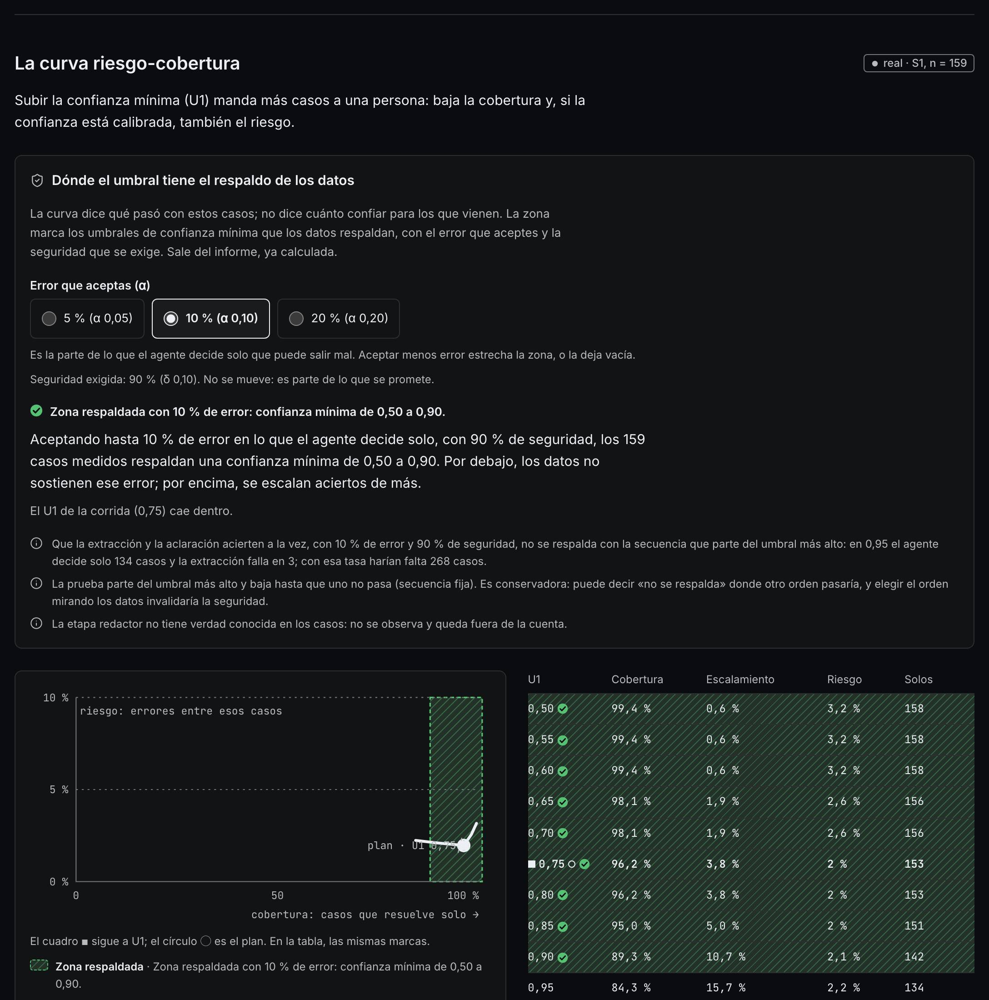
2. Playground, error de 5 % y U1 por debajo de la zona (pasada de interacción)
tras elegir 5 % · 1280 px · claro · la interacción cambió la página
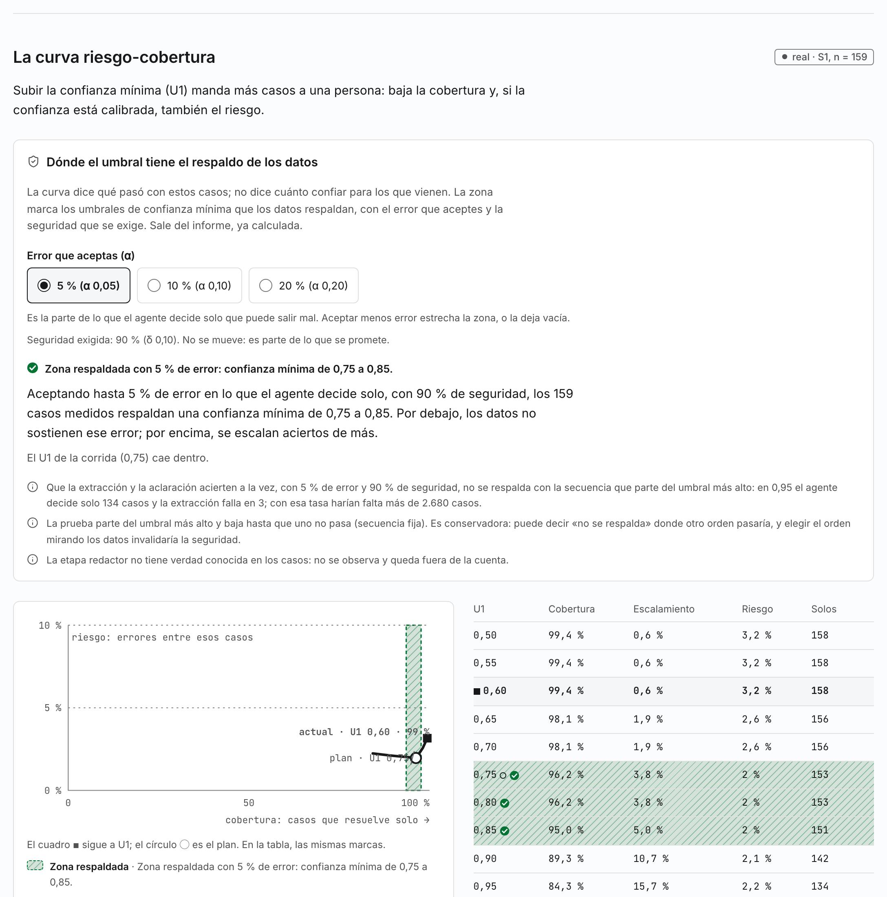
3. Playground, el deslizador de U1 con la zona y dónde cae su valor
tras mover U1 a 0,60 con 5 % · 380 px · oscuro · la interacción cambió la página
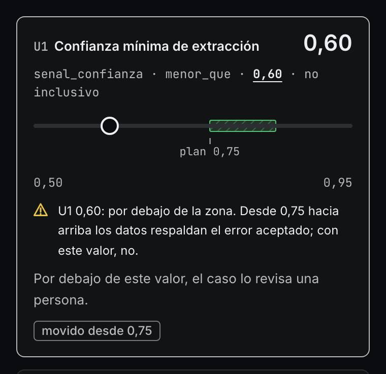
4. Brecha (/es/brecha), S1 con su garantía, como líder
tal como abre · 1280 px · claro
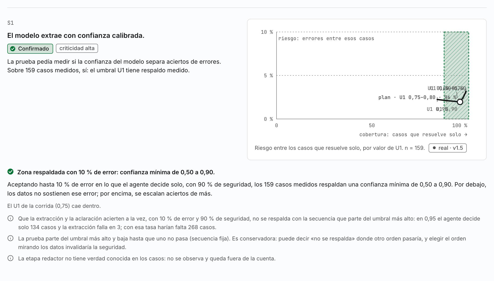
5. Brecha, S1, perfil experto (pasada de interacción)
tras pulsar «Experto» · 1280 px · oscuro · la interacción cambió la página
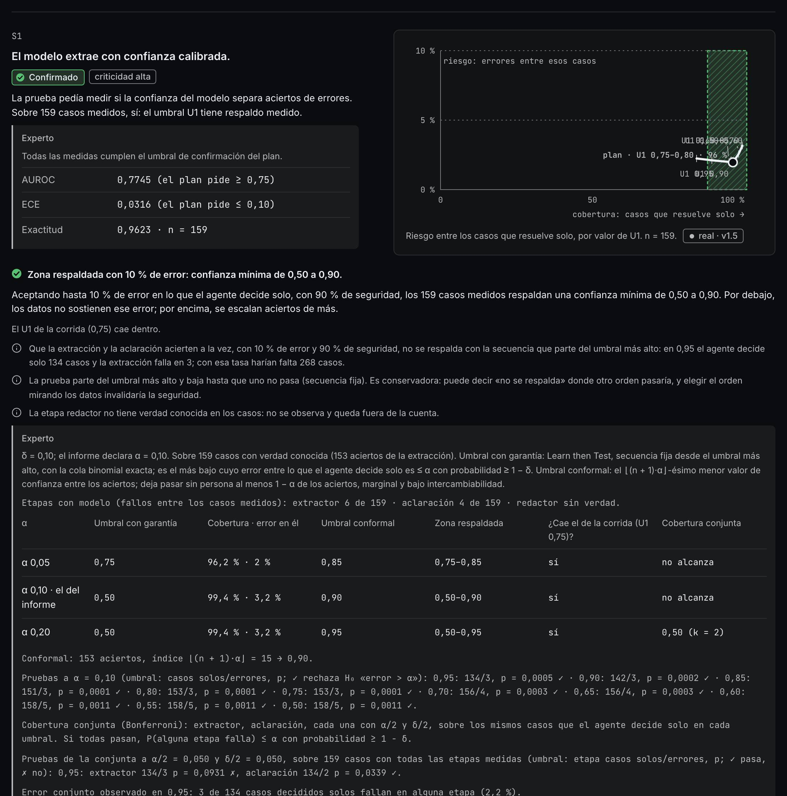
6. Brecha, S1 en el teléfono (como experto)
tras pulsar «Experto», 380 px · 380 px · claro · la interacción cambió la página
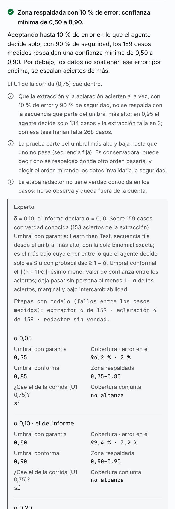
La pasada completa (8 capturas)
El playground y la Brecha, a 380 y 1280 px: en español en los dos temas. La miniatura es la parte de arriba; la huella identifica la captura entera que se leyó.
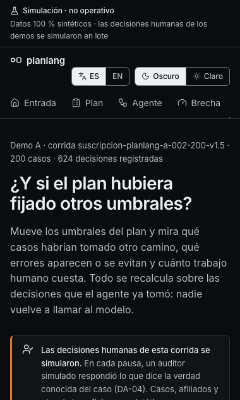
86c9f343cd41…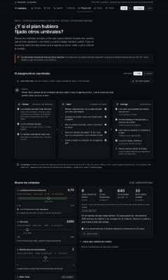
7b33c9375442…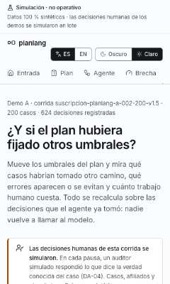
12ffff8d7655…5632468778f3…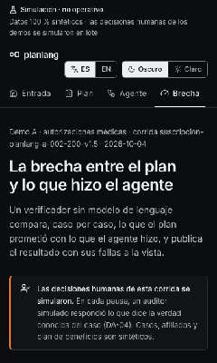
c4a5df79d2c9…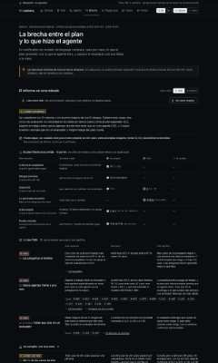
b0617a9a5da0…
7e59c329a940…6ad19ff3f6f6…